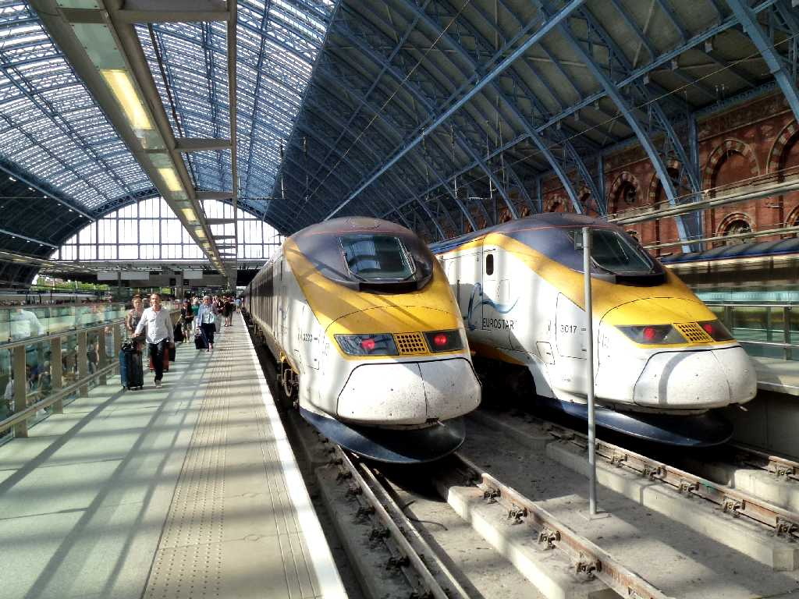
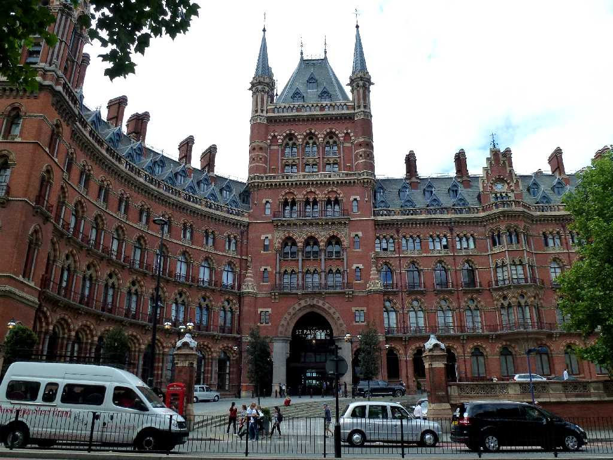

August 12 2013 St. Pancras Station London
Eurostar Train No.ES9037 14:43 Gare du Nord Paris to 16:00 St. Pancras London
８０日間世界一周鉄道の旅で５０日目の今日はユーロスターES9037番列車でフランスのパリ北駅を出発し３４８㎞を１時間１７分で走りロンドンのセントパンクラス駅に到着

St. Pancras Station
ユーラシア大陸太平洋岸の街ウラジオストックから鉄道でユーラシア大陸を約１４,０００㎞縦断し大西洋岸の街ロンドンに到着した